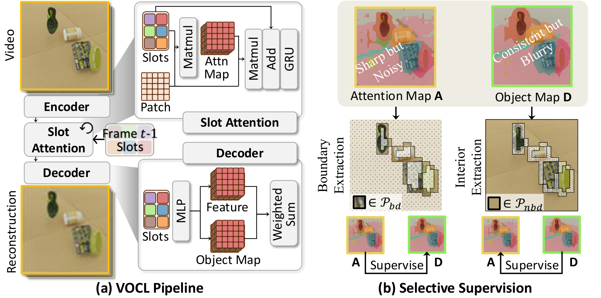
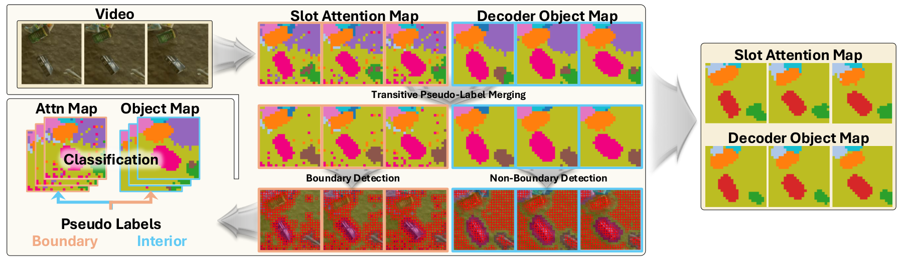

Typical video object-centric learning (VOCL) approaches employ slot-based frameworks that rely on reconstruction-driven encoder–decoder architectures, where learning is mediated by two spatial maps: attention maps from the encoder and object maps from the decoder. As these two distinct maps exhibit different properties, a recent dense alignment strategy attempted to reconcile this discrepancy by enforcing agreement across all spatio-temporal patches. However, this indiscriminate alignment inadvertently propagates the inherent weaknesses of each module—noisy encoder predictions and blurred decoder boundaries—while incurring a cost quadratic in the number of spatio-temporal patches.
Motivated by this, we propose Selective Synergistic Learning (SSync). Instead of exhaustive patch-to-patch alignment, SSync prevents error propagation by selectively distilling only the most reliable cues: leveraging the encoder strictly for boundary refinement and the decoder for interior denoising, realized via a pseudo-labeling scheme with linear complexity. To prevent the reinforcement of architectural biases like slot redundancy, we further introduce a transitive pseudo-label merging that consolidates overlapping slots based on spatio-temporal activation consistency. Extensive studies show that SSync improves decomposition quality, serves as a versatile plug-and-play module, and remains exceptionally robust to slot configurations.


Object discovery on three VOCL benchmarks (averaged over 3 runs). Best per column in bold.
On MOVi-C, prior methods degrade sharply as the slot count grows (SlotContrast drops to 61.8 FG-ARI at 15 slots), whereas SSync stays stable thanks to transitive pseudo-label merging. Best per column in bold.
| Method | 7 slots | 11 slots | 15 slots | |||
|---|---|---|---|---|---|---|
| FG-ARI↑ | mBO↑ | FG-ARI↑ | mBO↑ | FG-ARI↑ | mBO↑ | |
| SlotContrast | 74.9 | 27.9 | 69.3 | 32.7 | 61.8 | 31.2 |
| SRL | 76.5 | 31.6 | 74.3 | 34.5 | 72.8 | 31.1 |
| SSync (Ours) | 76.9 | 39.8 | 79.4 | 39.5 | 78.8 | 41.0 |
Transferability of the learned slots to downstream future prediction: a frozen object-centric model + SlotFormer (SF) autoregressively predicts future slots. SSync yields the most predictable representations. Best per column in bold.
| Method | MOVi-C | MOVi-E | YouTube-VIS | |||
|---|---|---|---|---|---|---|
| FG-ARI↑ | mBO↑ | FG-ARI↑ | mBO↑ | FG-ARI↑ | mBO↑ | |
| Reconstruction + SF | 50.7 | 25.9 | 70.6 | 24.3 | 27.4 | 28.9 |
| SlotContrast + SF | 63.8 | 26.1 | 70.5 | 24.9 | 29.2 | 29.6 |
| SRL + SF | 68.9 | 27.4 | 70.4 | 24.9 | 32.2 | 30.0 |
| SSync (Ours) + SF | 69.1 | 29.0 | 72.1 | 27.1 | 32.1 | 30.9 |
As a plug-and-play module, SSync added on top of two RandSF.Q variants (tsim from VideoSAUR, SSC from SlotContrast) improves nearly every metric across MOVi-C, MOVi-D, and HQ-YTVIS.
| Method | MOVi-C224×224 | MOVi-D224×224 | HQ-YTVIS224×224 | |||||||||
|---|---|---|---|---|---|---|---|---|---|---|---|---|
| ARI↑ | FG-ARI↑ | mBO↑ | mIoU↑ | ARI↑ | FG-ARI↑ | mBO↑ | mIoU↑ | ARI↑ | FG-ARI↑ | mBO↑ | mIoU↑ | |
| RandSF.Q (tsim) | 70.7 | 63.3 | 31.1 | 28.1 | 39.3 | 70.5 | 25.6 | 24.3 | 39.2 | 56.3 | 37.2 | 37.0 |
| + SSync | 73.0 | 67.3 | 32.3 | 29.9 | 45.5 | 71.2 | 27.6 | 25.7 | 42.9 | 58.6 | 39.4 | 39.2 |
| RandSF.Q (SSC) | 52.7 | 67.8 | 24.2 | 22.1 | 37.3 | 85.8 | 28.0 | 26.8 | 40.7 | 57.2 | 38.3 | 37.8 |
| + SSync | 55.5 | 71.4 | 25.1 | 23.1 | 39.4 | 86.5 | 27.9 | 26.8 | 48.6 | 57.5 | 42.1 | 41.9 |
Beyond video, SSync also improves image object-centric learning on MOVi-E and real-world COCO 2017. Best in bold.
MOVi-E
| Method | FG-ARI↑ |
|---|---|
| VideoSAUR | 78.4 |
| SOLV | 80.8 |
| SlotContrast | 84.8 |
| SlotCurri | 84.9 |
| SSync (Ours) | 86.0 |
COCO 2017
| Method | FG-ARI↑ | mBO↑ |
|---|---|---|
| Baseline | 40.5 | 28.8 |
| SRL | 42.8 | 29.4 |
| SlotCurri | 43.4 | 28.9 |
| SSync (Ours) | 47.9 | 33.1 |
Each dataset has its own slider—drag it to blend between the input video and the predicted slot map (each slot shown in a distinct color).
Every evaluated clip (input overlaid with predicted slot masks). Use the player controls to pause and scrub through time.
MOVi-C
MOVi-C
MOVi-C
MOVi-C
MOVi-C
MOVi-C
MOVi-C
MOVi-C
MOVi-E
MOVi-E
MOVi-E
MOVi-E
MOVi-E
MOVi-E
MOVi-E
MOVi-E
YouTube-VIS 2021
YouTube-VIS 2021
YouTube-VIS 2021
YouTube-VIS 2021
YouTube-VIS 2021
YouTube-VIS 2021
YouTube-VIS 2021
YouTube-VIS 2021
@inproceedings{moon2026ssync,
title = {Selective Synergistic Learning for Video Object-Centric Learning},
author = {Moon, WonJun and Heo, Jae-Pil},
booktitle = {European Conference on Computer Vision (ECCV)},
year = {2026}
}
@inproceedings{moon2026reconstruction,
title = {Reconstruction-Guided Slot Curriculum: Addressing Object Over-Fragmentation in Video Object-Centric Learning},
author = {Moon, WonJun and Seong, Hyun Seok and Heo, Jae-Pil},
booktitle = {Proceedings of the IEEE/CVF Conference on Computer Vision and Pattern Recognition (CVPR)},
year = {2026}
}
@inproceedings{seong2026synergistic,
title = {From Vicious to Virtuous Cycles: Synergistic Representation Learning for Unsupervised Video Object-Centric Learning},
author = {Seong, Hyun Seok and Moon, WonJun and Heo, Jae-Pil},
booktitle = {International Conference on Learning Representations (ICLR)},
year = {2026}
}